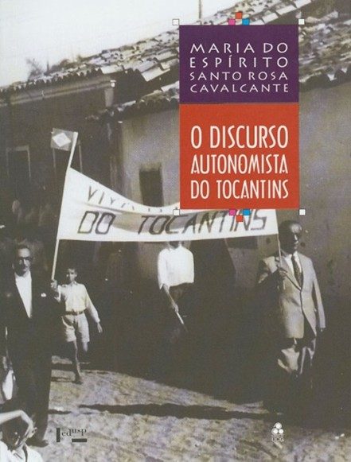

<style>
    section {
        display: flex;
        flex-direction: row;
        align-items: center;
        justify-content: center;
        gap: 40px;
        margin: 40px 0;
    }


    .conteudo {
        max-width: 1000px;
        font-family: Arial, sans-serif;
        font-size: 16px;
        line-height: 1.6;
        color: #333;
        text-align: justify;
    }

    .conteudo p {

        margin-bottom: 16px;
    }

    img {
        width: 300px;
        height: auto;
        border-radius: 8px;
    }
</style>
<section>

    <div class="imagem">

        

    </div>
    <div class="conteudo">

        <h3>O Discurso Autonomista do Tocantins</h3>

        <h5>Maria do Espírito Santo Rosa Cavalcante</h5>

        <p>O livro analisa os principais momentos em que a ideia de autonomia do Norte de Goiás ganhou força. A pesquisa
            se concentra em três períodos: os anos 1820, as décadas de 1950 e 1980, discutindo o contexto político, os
            atores sociais e as articulações que marcaram o movimento.</p>

        <p>No primeiro momento, a autora destaca o papel de Theotônio Segurado e sua proclamação de 15 de setembro de
            1821, que mobilizou apoios ao projeto de um governo independente. O segundo período, entre 1956 e 1960,
            relaciona-se à construção de Brasília e à meta de integrar o Centro-Oeste, quando Porto Nacional se tornou
            um dos focos do movimento pela criação do Estado do Tocantins. Por fim, os capítulos dedicados a 1985-1988
            tratam das alianças partidárias e das negociações políticas que resultaram na aprovação da autonomia
            tocantinense durante a Assembleia Nacional Constituinte.</p>
    </div>

</section>